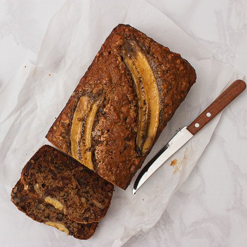

Banana Bread

Banana bread with two slices sliced at the end
Description
This simple yet delicious banana bread is moist, delicious and filling. Pair it with a cup of coffee and you've got yourself a delicious snack
Ingredients
- 2 cups self raising flour
- 1 tspn baking powder
- pinch of salt
- 125g butter
- 1 cup brown sugar
- 2 eggs
- 3 overripe bananas, mashed
- 1 banana sliced lengthwise
Steps
- Preheat oven to 180 degrees Celsius and grease loaf tin
- Combine flour, baking powder and salt in a bowl.
- In a separate bowl, cream butter and brown sugar.
- Mix in the eggs and mashed bananas.
- Stir the banana mixture into the flour.
- Pour batter into greased pan and place banana slice on top.
- Bake for 55-60 mins.
- Allow to cool, slice and enjoy.